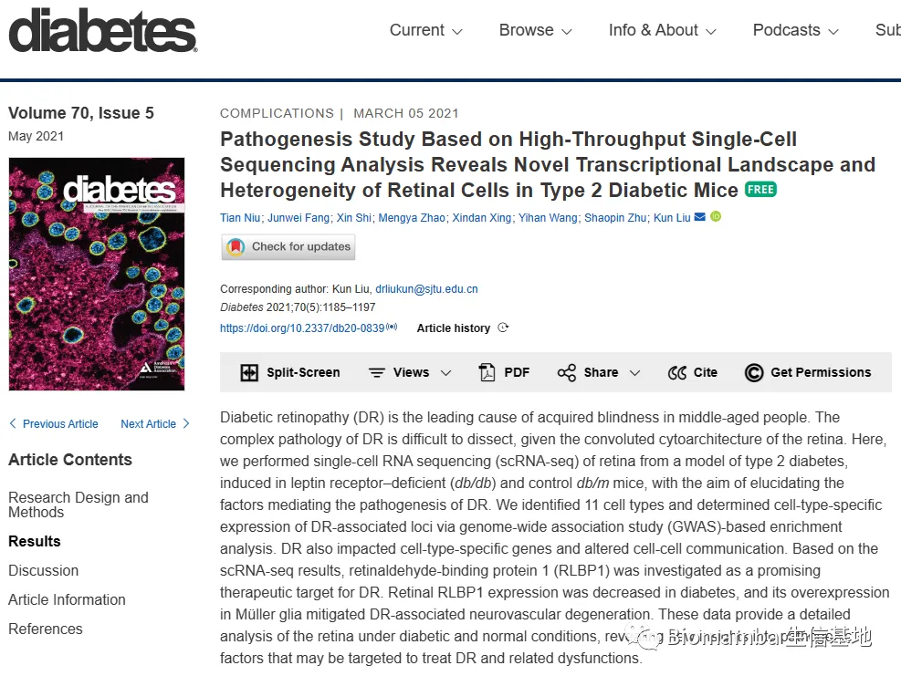
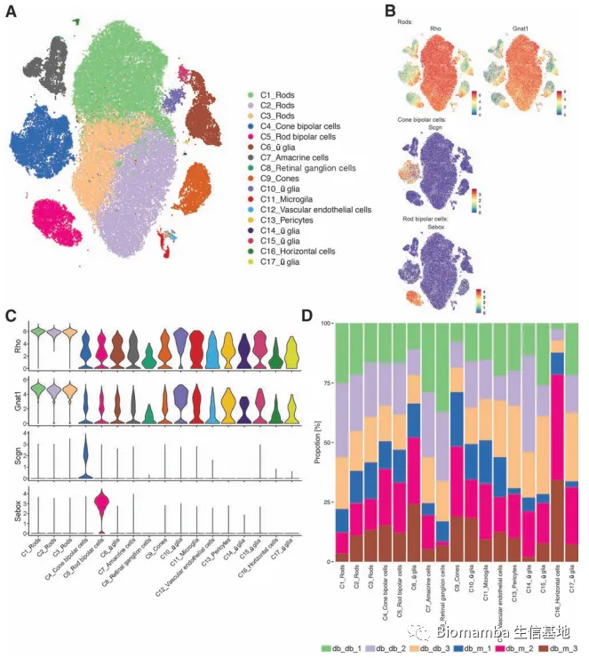
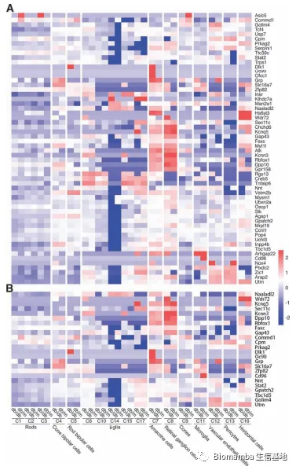
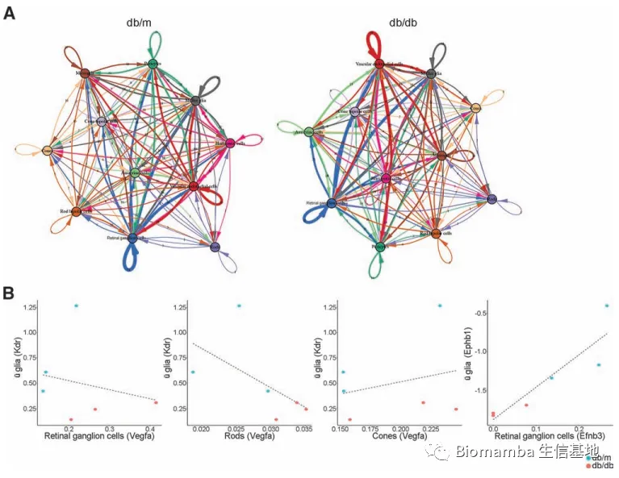
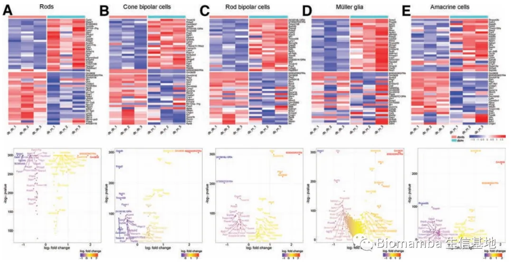
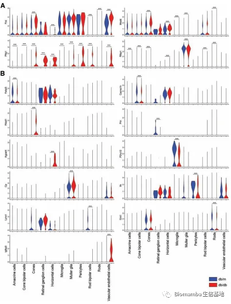
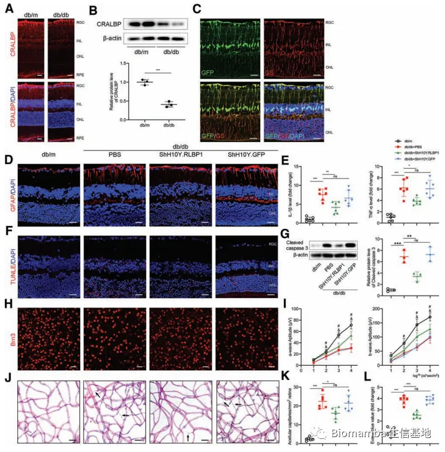

酸了，六个样本的scRNA-Seq+差异分析=9分文章
原文：https://mp.weixin.qq.com/s?__biz=MzAwMzIzOTk5OQ==&mid=2247500273&idx=2&sn=c95ac7ceecce0e6364f49e75058caabe&chksm=9b3cb8a1ac4b31b76b36635ac5e3d3385db6cc8c3fa916541bcb61d9a3ad4417f4bfdaa10274#rd 合集：文献速递
写在前面
今天看到一篇《Diabetes 》上题为"athogenesis Study Based on High-Throughput SingleCell Sequencing Analysis Reveals Novel Transcriptional Landscape and Heterogeneity of Retinal Cells in Type 2 Diabetic Mice"。这篇文章[1]是去年五月发表的，那么它对应的影响因子是2020年度的9.46 ，考虑到发表在《Diabetes》上，其实际的生物学价值可能要比这个影响因子高一些。抱着学习的心态点了进来，很遗憾的告诉大家，如果你想从学习单细胞的角度来看这篇文章，我觉得你可能会收获甚微。

具体内容
Diabetic retinopathy (DR)为一种糖尿病的并发症这里不是我们讨论的重点，不作介绍。这个文章的含单细胞量确实很高，正文中共计6张Figure，其中5张都是单细胞相关的图片，给我的感觉就是其实这五张图片都可以放在Supplement里：
第一张图就是老几样——TSNE、marker展示(教程参考：手把手教你做单细胞测序数据分析（三）——单样本分析)、细胞比例统计(教程参考: 沉浸式统计细胞比例)，都是些比较简单的图片，作者花了一段内容向大家介绍其中的细胞数量组成与具体比例。

第二张图作者展示了一些之前经GWAS证明与DR相关的基因集，大致意思是告诉大家这些基因的表达在DR中是具有异质性的，而这便是这篇单细胞文章存在的意义。

紧接着就来到了图三，作者使用cellphoneDB(我个人更喜欢cellchat:单细胞测序数据进阶分析—《细胞通讯》2.2CellChat多组别分析)对两组数据进行了细胞通讯的计算，但显然作者对算到的通路都不太感兴趣，不知为何掏了Kdr与Vegfa这对配受体出来发起猛攻，并且对它们进行了相关性分析，发现这对配受体在RGC、Rods、Cones中的相关性分别为-0.26、-0.77、-0.20而另一对配受体Ephb1、Efnb3在RGCs中的相关性高达0.99。值得一提的是，如果这里做相关性分析，显然我会以每个细胞为单位进行相关性分析，而不是下图这样以样本为单位(参考教程:来个线性回归分析)。
接下来的图四是差异分析了，对以下五种主要的细胞类型进行了组间差异分析(参考教程:手把手教你做单细胞测序数据分析 （六） 组间差异分析及可视化) ，并将GO富集(参考教程:手把手教你做单细胞测序数据分析（七）—— 基因集富集分析)的结果放在了补充材料之中。
图五是图四的延续，用小提琴图具体的展示了一些差异基因的表达情况，真的很难相信 这是一张近十分文章正文中的完整Figure，而本文的单细胞内容也到此结束。
图六中作者使用腺病毒载体递送了上面的一个差异基因 RLBP1，并通过免疫荧光、WB、ELISA、视网膜扫描图证明了这一基因的表达量差异会引起一些炎症反应。好吧，我也不会做实验，没有评价的资格，大家来瞅瞅 这些实验大概属于怎样的水平。
我的看法
说实话我这人一直比较悲观，个人以为现在这种小样本的动物单细胞数据应当不太容易 发十分左右的文章，况且从单细胞数据分析的角度来说这篇文章确实不能算是优秀。但是这篇文章确实是DR领域较早 的scRNA-Seq作品(不是第一篇，有更早的[2])，作为开拓者之一确实值得《Diabetes》的青睐。所以目前若能抢先揭示一类疾病模型的scRNA-Seq图谱，仍有可能轻松发十分以上的文章。看来还是我太保守了，此前总说学完我们的教程(六万播放量的B站单细胞课程)可以发一篇3~5分的文章，看来实际情况要乐观的多，祝各位都有光明的未来 ！
参考文献 ：[1]: Niu T, Fang J, Shi X, Zhao M, Xing X, Wang Y, Zhu S, Liu K. Pathogenesis Study Based on High-Throughput Single-Cell Sequencing Analysis Reveals Novel Transcriptional Landscape and Heterogeneity of Retinal Cells in Type 2 Diabetic Mice. Diabetes. 2021 May;70(5):1185-1197.[2]: Van Hove I, De Groef L, Boeckx B, Modave E, Hu TT, Beets K, Etienne I, Van Bergen T, Lambrechts D, Moons L, Feyen JHM, Porcu M. Single-cell transcriptome analysis of the Akimba mouse retina reveals cell-type-specific insights into the pathobiology of diabetic retinopathy. Diabetologia. 2020 Oct;63(10):2235-2248.

如何联系我们
 公众号后台消息更新不及时，超过48h便不允许回复读者消息，这里给大家留一下领取资料、免费服务(有root权限的共享服务器,注册即送200￥)的微信号 ，方便各位随时交流、提建议(科研任务繁重，回复不及时请见谅)。此外呼声一直很高的交流群 也建好了，欢迎大家入群讨论：永久免费的千人生信、科研交流群
公众号后台消息更新不及时，超过48h便不允许回复读者消息，这里给大家留一下领取资料、免费服务(有root权限的共享服务器,注册即送200￥)的微信号 ，方便各位随时交流、提建议(科研任务繁重，回复不及时请见谅)。此外呼声一直很高的交流群 也建好了，欢迎大家入群讨论：永久免费的千人生信、科研交流群
大家可以阅读完这几篇之后添加给生信入门初学者的小贴士 如何搜索公众号过往发布内容

 您点的每个赞和在看，我都认真当成了喜欢
您点的每个赞和在看，我都认真当成了喜欢